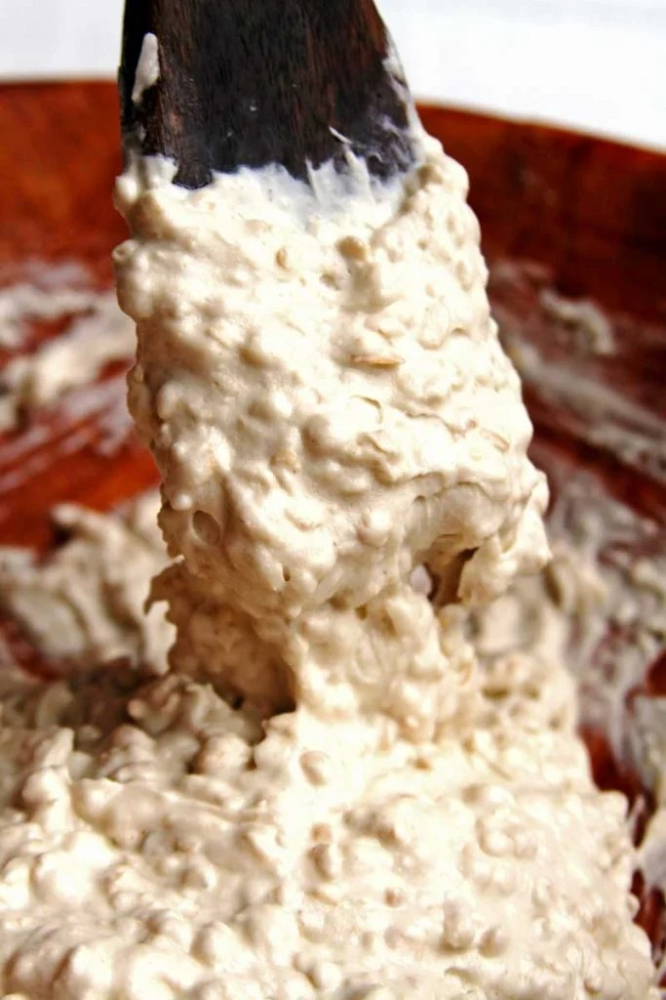

1 xícara de farinha de arroz (130 gramas)
1/2 xícara de polvilho doce (60 gramas)
1/2 xícara de aveia em flocos sem glúten (55 gramas)
1/2 colher de chá de sal (2,5 gramas)
1/2 colher de chá rasa de goma xantana
1 colher de sopa de açúcar mascavo (12 gramas)
1 colher de sopa de fermento biológico instantâneo (12 gramas)
2 colheres de sopa de azeite (30 ml)
1 xícara de água morna (240 ml)
Esta receita de pão nem parece que não tem glúten, é flexível e tem gostinho de pão caseiro.
Misture todos os secos em uma bacia.
Derrame o azeite por cima dos secos e vá adicionando a água aos poucos, mexendo com uma colher de pau.
Você não precisa sovar a massa nem mexer muito, uma vez que você consiga uma massa grossa, grudenta e homogênea, está pronto!
Transfira a massa para uma forma untada e polvilhada com farinha de arroz utilizando uma espátula. A minha forma mede 22 cm de comprimento, 6 cm de altura e 8 cm de largura, se estiver usando uma forma maior dobre a receita, mas mantenha a mesma quantidade de fermento.
Como a massa é muito grudenta o truque para espalhá-la de maneira uniforme é utilizando uma colher molhada. Use as costas da colher para nivelar a massa.

Deixe crescer em um local quentinho, eu gosto de colocar no micro-ondas desligado junto com uma xícara de água quente. O pão vai crescer e dobrar de volume em aproximadamente 30 minutos, quando passar 15 minutos do tempo de crescimento preaqueça o forno à 200º C.
Após dobrar de volume (+/- 30 minutos) leve o pão para assar por aproximadamente 25 minutos ou até que ele esteja dourado, com cheirinho de pão fresco saindo do forno.
Deixe esfriar por completo antes de cortar o pão vegano rápido, eu sei que é irresistível quando o pão está fresco, mas se não esfriar antes de cortar ele fica um pouco abatumado.
Sirva com seu acompanhamento preferido.
Este pão vegano rápido pode ser congelado, para isso fatie o pão e coloque as fatias em um saco plástico adequado para o freezer. Atenção, não sobreponha as fatias, se não elas grudam juntas depois de congeladas. Para descongelar você pode colocar as fatias diretamente na torradeira (se você tiver uma) ou na frigideira. O pão congelado dura até 3 meses.
A melhor textura deste pão vegano rápido sempre vai ser no primeiro dia, a partir do segundo dia ele fica um pouco mais firme, mas é só aquecê-lo por alguns segundos na frigideira que ele volta a ficar fofinho como no primeiro dia.
Como este pão vegano rápido não leva ovos ele dura uns 4 dias fora da geladeira, mas se preferir mantenha-o refrigerado por até 1 semana. Na geladeira o pão vai ficar duro, mas é só aquecê-lo na torradeira ou frigideira que ele volta a ficar macio.
Este pão vegano rápido é perfeito pra fazer bruschettas, bruschettas são fatias de pão cobertas de queijo e acompanhamentos que são levadas ao forno para gratinar. As fatias ficam crocantes e macias depois de esquentadas no forno, fica uma delícia!
Esta massa de pão vegano rápido pode virar uma massa de pizza, para isso basta untar bem e polvilhar a forma de pizza com farinha de arroz e depois espalhar a massa no formato da pizza com o auxílio de uma colher. Preasse a massa por 20 minutos em forno preaquecido à 200º C, depois cubra com o recheio da sua preferência e volte ao forno por mais uns 20 minutos ou até que a parte inferior esteja dourada.
Se quiser, também pode transformar essa massa de pão vegano rápido em uma crostata, crostata é uma massa bem fininha e crocante que você encontra em algumas pizzarias como aperitivo. Minha mãe quando faz esta receita de pão vegano rápido ela sempre faz uma receita triplicada, pra render bastante e ela ter menos trabalho depois. Ela sempre reserva uma parte pequena da massa e abre sobre uma forma de pizza untada e polvilhada com farinha de arroz, ela aromatiza com alecrim e salpica um pouco de queijo ralado. Pra assar é só levar ao forno preaquecido à 200º C até que ela fique dourada e crocante. Fica muito bom regada de azeite extra virgem 😉
Fat: 2,6 gramas
Calories: 104 calories
Saturated Fat: 0,4 g
Unsaturated Fat: 2,1 gramas
Sodium: 4%
Fiber: 4%
Cholesterol: 0%
Carbohydrate: 6%
Sugar: 0,7 g
Serving Size: 12
Trans Fat: 0%
Protein: 3%